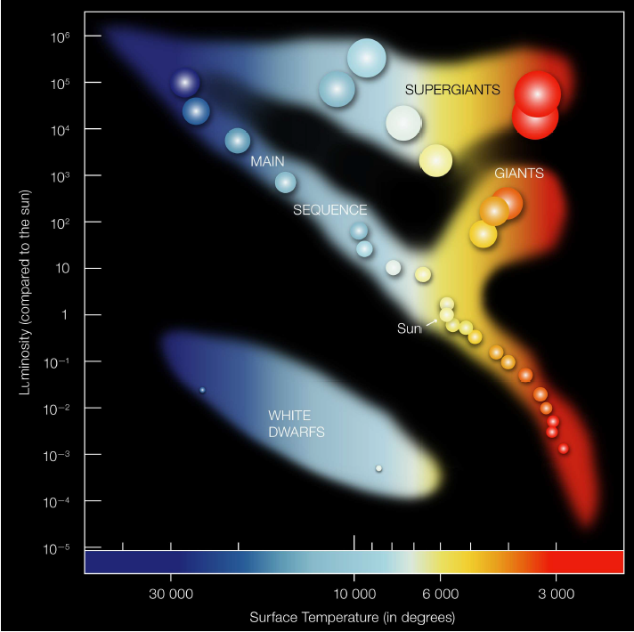
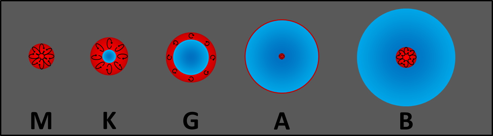

Stellar astrophysics
Discover the Basics
Stars like our Sun have lifetimes spanning billions of years. By observing the birth, life, and death of other stars, and mapping the inner workings of our own, we unlock a window into the universe.
The Sun is currently in the middle of its ten-billion-year lifetime. Studying stellar physics helps us predict its ultimate fate and trace its origins, while the Sun itself offers an unparalleled close-up laboratory to investigate complex magnetohydrodynamic and convective processes that govern all stars.
Stellar Evolution
Stellar evolution begins with an enormous molecular cloud of hydrogen gas and trace elements. Under the pull of gravity, parts of the cloud contract to form a proto-star. as contraction continues, temperature and pressure rise until hydrostatic equilibrium is reached (outward gas pressure balancing inward gravitational pull), creating a T-Tauri star.
With sufficient mass (above ~0.08 M☉), the core temperature reaches roughly 10 million Kelvin, igniting the nuclear fusion of hydrogen into helium. This marks the transition to the Main Sequence — the long, stable adulthood of a star where it spends approximately 80% of its lifetime.
The ultimate fate of a star depends entirely on its mass:
- Low to Intermediate Mass (0.08 - 1.0 M☉) After exhausting core hydrogen, the star expands into a Red Giant. Once the shell hydrogen burns out, it leaves behind a gradually cooling degenerate helium core — a White Dwarf. This is the destiny of our Sun.
- Intermediate Mass (1.0 - 10 M☉) These stars undergo core helium fusion, often igniting in a sudden "helium flash" and evolving across the horizontal branch or asymptotic giant branch, pulsating as RR Lyrae or Cepheid variables, before shedding their outer layers to form a planetary nebula around a carbon-oxygen White Dwarf.
- High Mass (M > 10 M☉) Fusion continues through heavier elements up to iron. Without energy gain from iron fusion, the core collapses under gravity, triggering a violent Supernova explosion. What remains becomes a neutron star or a black hole.

The Hertzsprung-Russell Diagram: a plot of stellar surface temperature vs. luminosity. Main sequence stars fuse hydrogen in their cores. Once depleted, they expand into giants/supergiants or fade into white dwarfs. Massive stars in the top-left have lifetimes of millions of years, while low-mass dwarfs in the bottom-right can shine for trillions of years. (Credit: ESO / CC BY 3.0)
Stellar Structure

Stellar Interiors: Schematic illustrating the convective (red, turbulent) and radiative (blue, stable) layers for stars of different masses.
At the center of every star lies the core, the dense and hot nuclear furnace where energy is generated. Near the surface (the photosphere), energy escapes into space. Between these regions, heat is transported by the most efficient physical mechanism available: radiation (photons scattering through gas) or convection (turbulent fluid motion).
Convection occurs when the temperature gradient is very steep or opacity is high. Rising parcels of hot plasma expand, cool, and transfer their heat upwards, while cooler, denser plasma sinks back down. This creates circulating convective cells, producing the "boiling" surface we observe on the Sun.
The balance between radiative and convective zones changes dramatically with stellar mass:
- Low-mass stars (M-dwarfs): Have very steep temperature gradients throughout and are fully convective.
- Solar-mass stars (like the Sun): Feature an inner radiative zone spanning the core up to 70% of the radius, surrounded by an outer convective envelope (the final 30%).
- Massive stars (a, B, O types): Run the CNO cycle, making their cores extremely hot and convective, surrounded by a stable, non-convective radiative envelope.